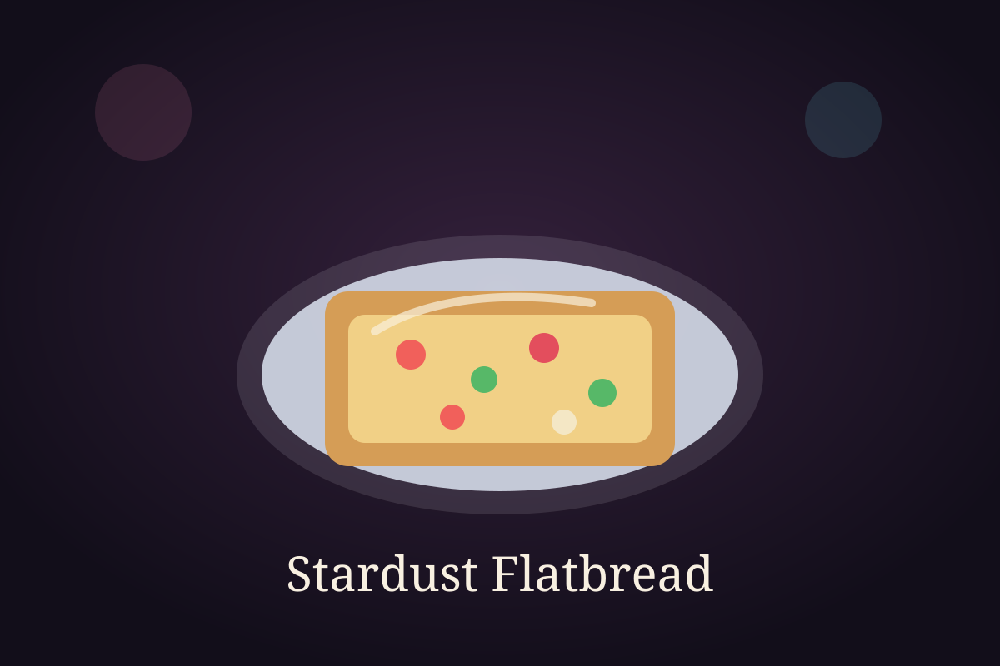

Time Module

Ingredient Vault
Ingredients
- 2 flatbreads or naan bases
- 2 tablespoons pizza sauce
- 1/2 cup mozzarella cheese
- 1/4 cup bell peppers, sliced
- 1/4 cup onion, sliced
- 1/4 cup sweet corn
- 1 teaspoon dried herbs
- 1 tablespoon olive oil
Cooking Sequence
Step-by-step instructions
- Place the flatbreads on a baking tray and spread pizza sauce over each one.
- Add mozzarella cheese evenly across the surface.
- Scatter the sliced peppers, onion, and sweet corn on top.
- Drizzle lightly with olive oil and sprinkle dried herbs over the toppings.
- Bake until the edges turn crisp and the cheese melts fully.
- Remove from the oven and let the flatbread rest briefly.
- Slice and serve warm.